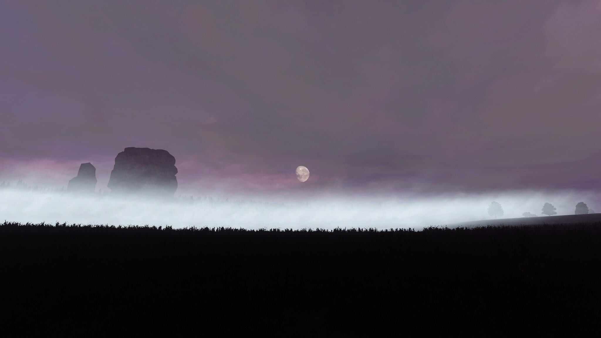

О проекте
Добро пожаловать в мир Sleepy Hollow! Здесь вы найдете множество интересных ресурсов и информации о нашем проекте.
стоит деревня, невдалеке от неё есть лощина, которую за её тишину и безмятежность, а также за флегматичный нрав её обитателей прозвали Сонной.
Место это словно пребывает под каким-то заклятием, заворожившим умы местных жителей, которые живут в мире грёз и бесконечного страха.
Вся округа изобилует сказаниями, «нечистыми местами» и суевериями. Главный дух, посещающий этот зачарованный уголок, — Всадник, который рыщет по ночам в поисках своей оторванной головы...
Бродя среди дремотных теней этого места, слушая сбивчивые рассказы местных жителей, каждый подпадет влиянию чар, носящихся в воздухе, будет подвержен видениям и столкнется со своими самыми страшными кошмарами...
Добро пожаловать в Сонную Лощину...
Полезные ссылки
Связаться с нами
С нами лучше не связываться 🔫...
artemmmchik@mail.ru